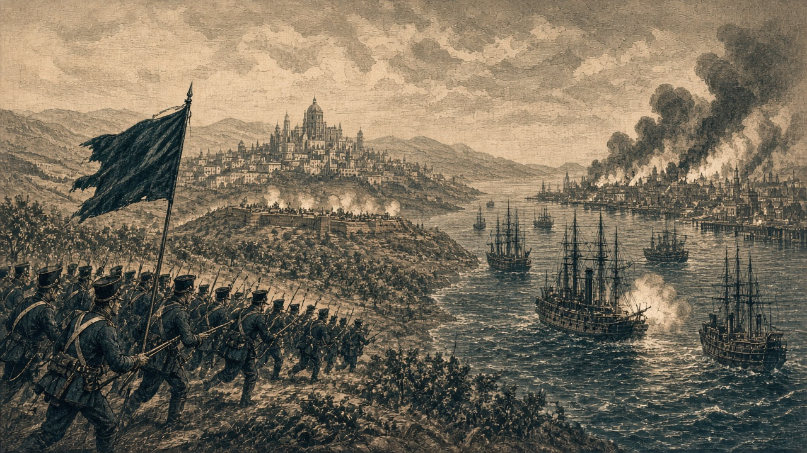

オリョルッル、桃谷に一万七千四百人
青海、蒼森辺境伯領に開戦
開戦二期目の桃谷戦線で、オリョルッルが公報一万七千四百人の損害を与えた。青海共和国は蒼森辺境伯領に開戦し、金野伯爵領との戦も次期に控える

【総合部】オリョルッル王国は第181期、桃谷連邦共和国の首都ナンサプの手前で攻勢を続け、公報で一万七千四百人の損害を与えた。王国側の損害は三千人。累計では桃谷二万六千二百人、オリョルッル五千七百人に達した。桃谷の兵力は八万六千四百人まで減り、人口も七万六百人へ落ちた。王国は前線で兵の練度を上げ、精鋭の装備を整えたうえで押し続けている。詳報は3面。
海運を掲げる青海共和国は、蒼森辺境伯領との交戦に入った。第181期の戦闘記録はなく、金野伯爵領との戦は次の第182期に始まる。青海の人口は二十七万二千五百人、兵力は十五万二千百人。外洋を航行した距離は八百三十五で、世界一を保った。国特集は8面。
黒潮、カペレナに停戦を打診 海底都市は八百人減
西岸では、黒潮自治国がカペレナ王国へ停戦を打診した。カペレナの艦砲は黒潮の海底都市に命中し、人口は八千人から七千二百人へ減った。軍港にも砲弾が届き、駆逐艦一隻が撃沈された。黒潮の部隊の一部は全滅している。打診の行方は4面で伝える。